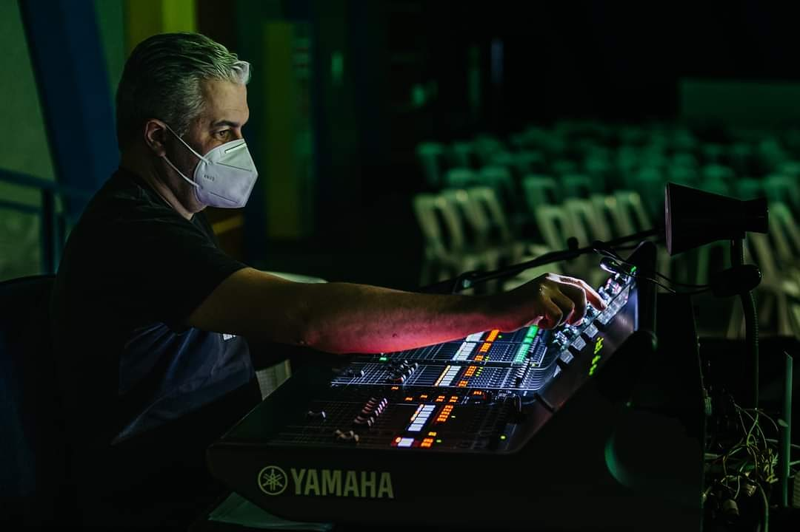

O nosso grupo de multimídia está dividido em 4 equipes principais, são elas: áudio, broadcast, projeção e transmissão. Conheça as atividades e as responsabilidades de cada time para que todas os aspectos relacionados a multmídia funcionem durante os cultos. Qual equipe você gostaria de conhecer? Clique abaixo para saber mais:
A equipe de áudio é responsável por garantir que o público espectador seja impacto pela mensagem passada através do áudio que necessita ser precisamente regulado em cada microfone, instrumento e nas caixas de som. Este time está a frente da operação das mesas de som que controlam o áudio tanto em eventos presenciais, como em transmissões online. A importância do time de áudio é indiscutível, sendo extremamente importante para que os eventos realizados na igreja sejam feitos com excelência.
A equipe de áudio é responsável por garantir que o público espectador seja impacto pela mensagem passada através do áudio que necessita ser precisamente regulado em cada microfone, instrumento e nas caixas de som. Este time está a frente da operação das mesas de som que controlam o áudio tanto em eventos presenciais, como em transmissões online. A importância do time de áudio é indiscutível, sendo extremamente importante para que os eventos realizados na igreja sejam feitos com excelência.